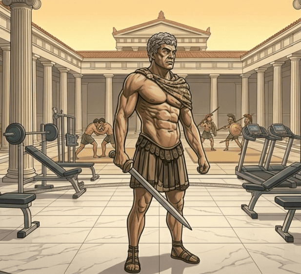
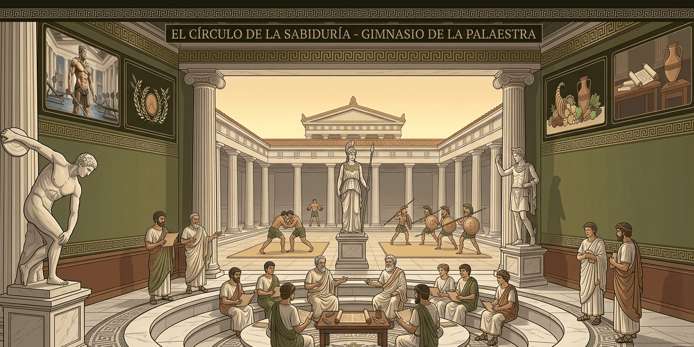
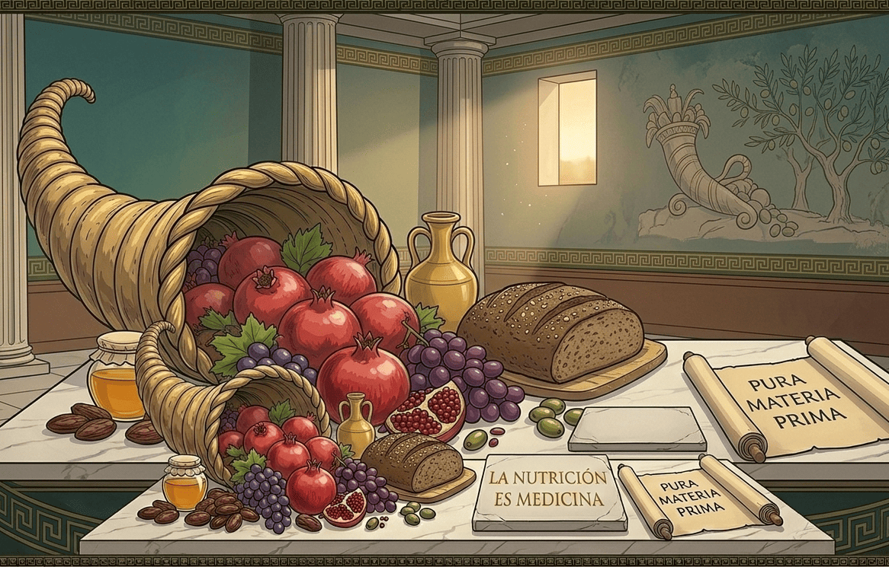
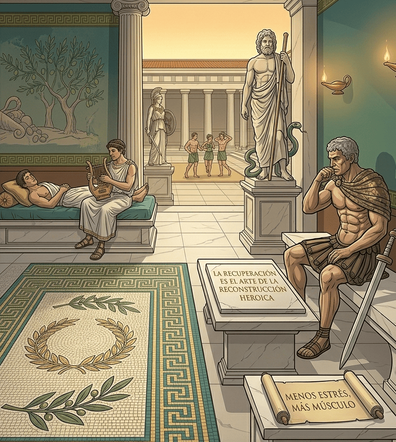

Entrenamiento
Hipertrofia: esculpir con paciencia
El músculo responde a tensión progresiva, buena técnica, volumen sostenible y recuperación. No hay un atajo más épico que repetir bien lo esencial.
 Roman Colosseum
Roman Colosseum
El círculo de la sabiduría
Ideas sencillas, respaldadas por los fundamentos que convierten esfuerzo en progreso.
Lecturas para tu travesía

El músculo responde a tensión progresiva, buena técnica, volumen sostenible y recuperación. No hay un atajo más épico que repetir bien lo esencial.

Prioriza proteína suficiente, vegetales, carbohidratos que disfrutes y grasas de calidad. La mejor dieta es la que puedes sostener con calma.

El entrenamiento da la señal; el sueño, la comida y los días suaves hacen posible la adaptación. Tu próxima sesión comienza cuando terminas la actual.